E-Commerce Website Redesign: a Small Business UX Case Study
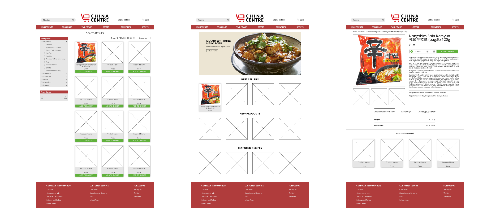Redesign wireframes.
This is a case study write up of an e-commerce website redesign based on a small business. My personal goals for this project was to deepen and apply my understanding of basic UX design, and to familiarise myself with Affinity Designer and InVision prototyping software tools. I also wanted to use the opportunity to display how good UX design is important when competing in such a wide market space.
The objective: to create an interactive prototype around an online shopping experience. The design should meet the goals of the user, the business and the brand. Ultimately, the prototype should be tested by the user and should follow information architecture heuristics.
The Deliverables: overview of the research process, competitor analysis, problem and solution statements, personas, storyboards or scenarios, sketches and evidence of ideation process, review of design iterations, wireframes, and an interactive prototype.
Methods and Skills: user interviews, contextual inquiry, competitor analysis, personas, sketching and storyboarding, information architecture, wireframing, site mapping, prototyping with Affinity Designer and InVision, usability testing.
Time-frame: 2 weeks
Throughout the project I will be using both the double diamond design process and agile methodology to research, refine and develop the redesign.
THE RESEARCH PROCESS
The first step of the process was to find a suitable website/ business to work on. I decided on a local Asian supermarket, China Centre UK, whose primary business is selling various Asian related goods, ranging from cooking ingredients to cookware. As well as a physical store, they also have an online store with a wider selection of items to choose from. This store, www.ChinaCentreUK.co.uk, was the subject of my redesign.
User Research and Contextual Inquiry
The most advantageous way of understanding how a website is used is to observe another user operating the site naturally. I decided to merge both the user interviews with contextual inquiry to get an understanding on how users could use the China Centre UK online store.
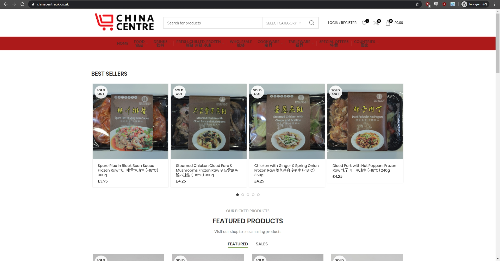The current China Centre UK homepage.
Three interviews were conducted on people who identified as cooks with varying amounts of skill and experience. These interviews were used to collect information on user habits. In order to get a consistent user experience, the interviewees were given specific tasks to complete. These tasks were:
- Add the following items to your cart:
- Rice Vermicelli
- Sushi Rice
- Japanese Curry
- Chicken Stock Poweder
Following the observations of the users interacting with the online store, a series of questions were asked. The interviewees reported that they mostly engaged in Asian cooking when they were inspired by a particular recipe. When asked where they would generally go to buy specialised ingredients, the majority of them said they would search Amazon first. Noting that the problem with the Amazon marketplace is that there are too many products on Amazon with varying degrees of quality and trust, thus the need to look at a specialised site where they can buy all their ingredients in one place.
There were many aspects of the current site that the interviewees enjoyed. For instance, the search bar was good at finding a product with a precise name, however when searching for a broad topic such as “Japanese curry” it would automatically go to a Japanese plate product page. This is frustrating for the user as it wastes time viewing a product that is not remotely related to the initially searched product. Interviewees also liked that interacting with the logo would take you back to the homepage as well as a wide selection of products available on the site.
With the positives of the online store there were also a number of negative points too.
Through the interviews I learnt that there was a pattern in what the interviewees disliked about using the online store. The number one problem with the current online store was that the text on the navigation bar was difficult to read due to the colour of the text. Despite the navigation bar being difficult to read, the general readability of the rest of the store was okay, however some of the product titles were too detailed, leading to cluttered text. Some of the products also lacked deep product descriptions as well as inspiration on how they can be used in different recipes.
Competitor Analysis
With the touchpoints found in the user research process, research on the competitors’ sites was done to see how they approached the user experience. Since Asian online supermarkets is a specialised/ niche market space, the interviewees in the user research did not know of any other existing online stores. As a result, I selected the top four online stores on a Google search (Oriental Mart, Starry Mart, Asian Grocery UK, and Asian Foodie) as well as an online store with both Asian and Western products which was recommended by an interviewee (Souschef).
A feature analysis was done to quantify the differences between the China Centre UK online store and its competitors. The three pages observed and analysed were the homepage, search results page and the product page.
Firstly, the homepage. The China Centre UK online store performed reasonably well against the competitors. The website has the most important features – namely, a hero image, search bar and cart icon. What the website lacked was any social media presence and any way of getting help quickly.
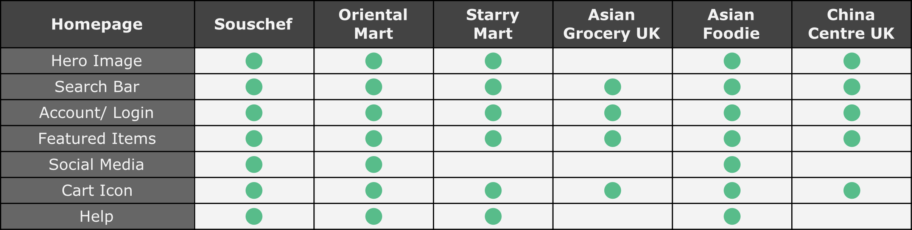Homepage comparison.
Secondly, the search results page. Although at a glance it appears that the China Centre UK website was one of the top performers, it lacks the top characteristic in a search results page which is a way to filter the search results. The website solely relied on its navigation bar to go through what the users want, which is time consuming.
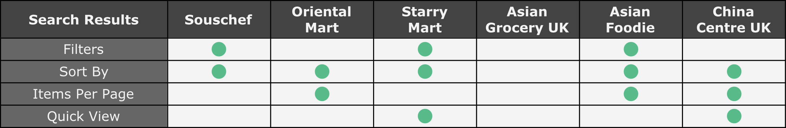Search results comparison.
And finally, the product page. For the sake of consistency, the same product was used when comparing product pages. If the product was not available on the website then a suitable replacement was found.
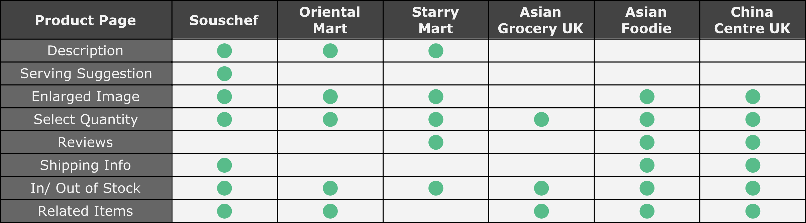Product page comparison.
The greatest deficit for the China Centre UK store was its lack of product description. Not only is this a lost opportunity for China Centre UK to make sales by enticing the user to buy the product, the user would also lack any inspiration after browsing the product. As mentioned in the user research section, the majority of the interviewees would buy products based on an inspiration they have seen.
Personas
I created two personas, one primary and one secondary to effectively communicate the insights gathered through my research so far.
The primary persona is named Tanya. She is a strong representation in the demographic, goals and needs of the users for the website.
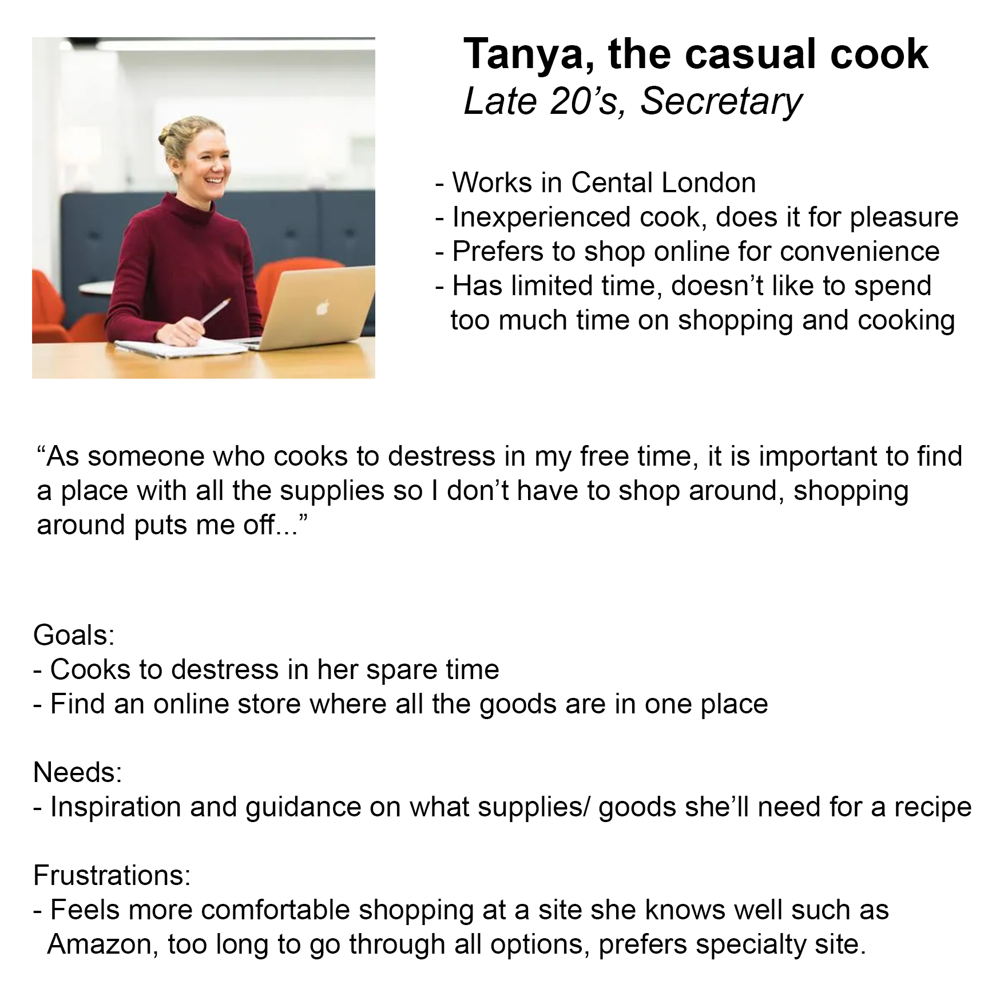The secondary persona is Susan, a representation of an atypical shopper. Although she is demographically different from my interviewees, it is important to understand that there will be various different users of the site. Her goals and needs, in particular the need for legible text, originates from data collected in the user research section.
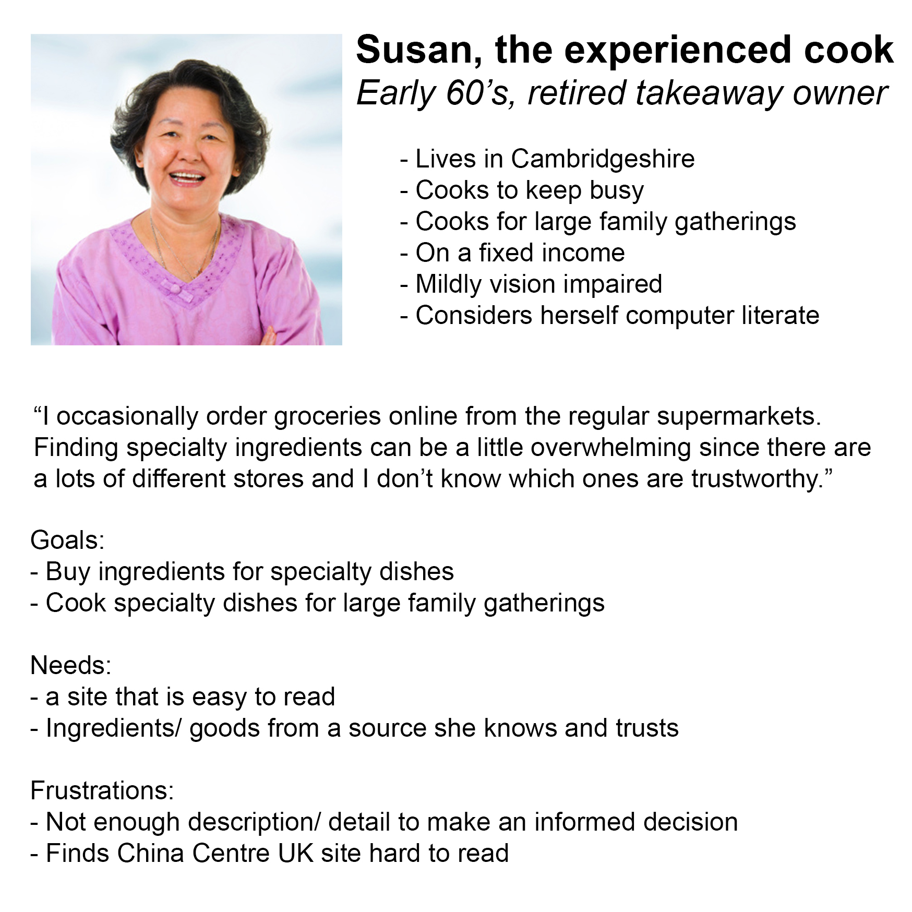Storyboard
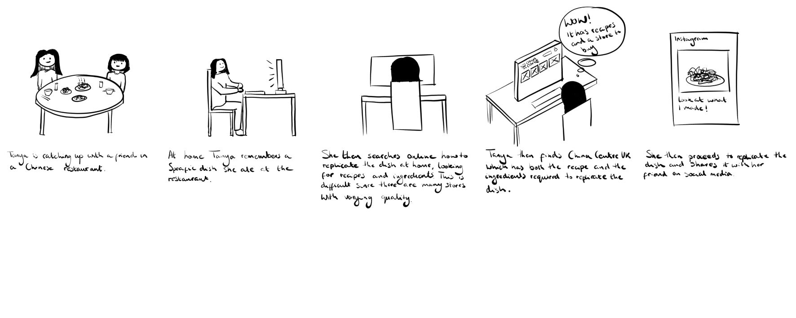Storyboard of the primary persona.
Problem Statement
Cooks inspired by social media videos or restaurant experiences need a place where they can receive information on the recipe and a place to purchase the ingredients so that they can replicate/ create the dishes from scratch at home.
Solution
Redesign the China Centre UK online store so that:
- On appearance it is reliable and trustworthy.
- The text is clear and easy to read.
- The site is easy to navigate.
- The site is more inspirational to home cooks.
- Products can be filtered for faster shopping.
IDEATION AND DESIGN
With the insights gathered from the research phase I can now produce a clear roadmap of where the project is headed.
Sketches and Wireframes
The first task to complete was to list the requirements of each page so that I can incorporate all the necessary elements. For example, for the homepage, it needed a hero image to capture the users’ immediate attention on the homepage. Although the current site has a navigation bar, it was important to make all of the categories concise to reduce visual clutter.
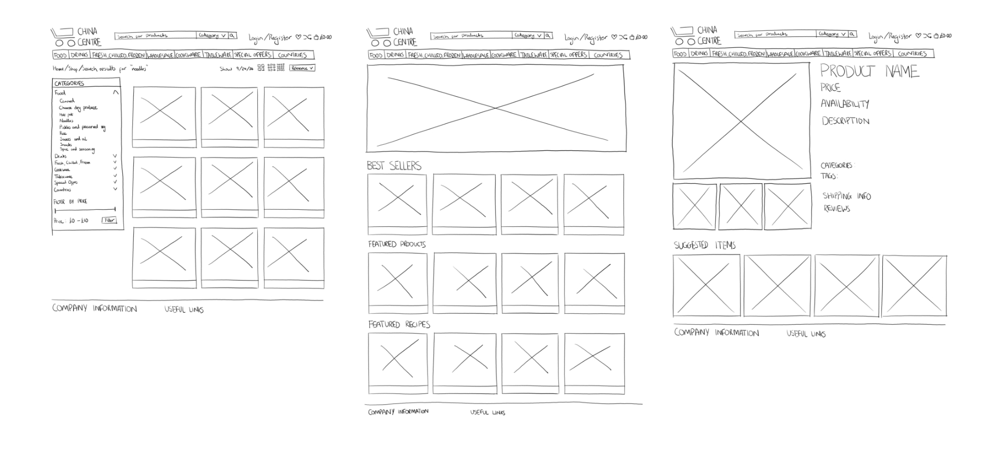First sketches of the search results page, homepage and product page respectively.
To keep things as simple as possible, I based the redesign of the homepage, search results page and product page on a single product, this product being Nongshim Shin Ramyun.
After my first round of sketches I then conducted some usability testing with the paper sketches. This gave me valuable feedback on what categories I needed for the navigation bar, and the number of search results listed on a single page (the nine initially sketched was not enough).
Medium Fidelity Wireframes
Despite Affinity Designer not being industry standard software, it is still capable of producing good results with good workflow.
The medium fidelity wireframes produced in this section will be printed and tested, just like the paper prototypes produced in the previous section.
Homepage Iterations
From the testing of the first prototype (prototype 1 below) I received important feedback on the whole appearance of the homepage. The panel around the hero image reduced the readability, and in general did not look clean. Testing also noted that the page was too top heavy due to the footer of the page being bland and boring. Since the footer of the page has important information, I decided to put a panel around all the necessary links (prototype 2 below). Not only is this more aesthetically pleasing, it also improves the overall readability of the text.
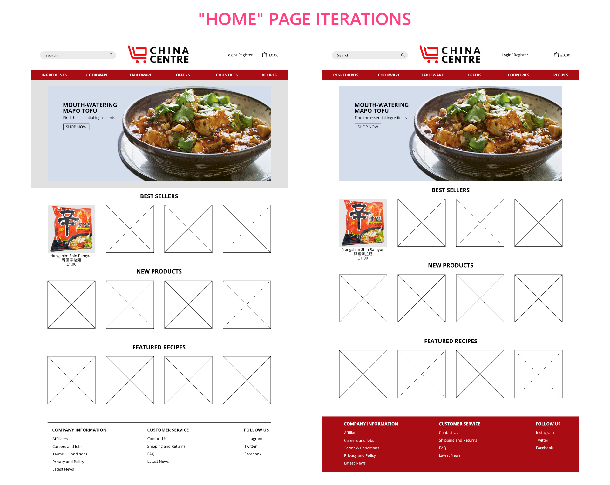Homepage prototypes 1 and 2 respectively.
Despite prototype 2 being a great improvement compared to prototype 1, there are improvements to be made which was noted in the testing of the prototype. The largest point made in testing was that the red was too sharp on the eye and looked tacky, giving a general lack of professionalism. To combat this, a flat grey was used instead of the strong red. This gives a modern, sleek look to the page, as well as giving off a sense of professionalism. The second point made was that the grey background in the product thumbnails distracted away from the product. In the next prototype, the product was encased in a white box and a shadow was given to contrast it from the already white background. This change, despite being small, was an overall positive change and it reduced visual clutter as well as matching with the biggest change of the prototype, that being the colour change. The simple box and shadow gives off a clean aesthetic and improves overall readability of the product names.
It is also important to involve the client in the design process since it is their brand that they want to convey to their users. Prototype 3 (below), in my opinion, looked the most clean with the grey used, however the client did not like the grey and thought it was boring to look at. They insisted that red was to be used again but suggested trying to use another shade of red. Taking this into account of any design decisions, in prototype 4 (below) I changed the grey into a flat red. This shade of red successfully meets all of the requirements of being modern looking, while being able to read any text on the colour.
The second point of prototype 3 was that there was no distinction between the product name and image. In the following prototype I decided to put a box behind the text, giving the necessary distinction. Placing the box behind the text also reduced the large amount of white space present in prototype 3.
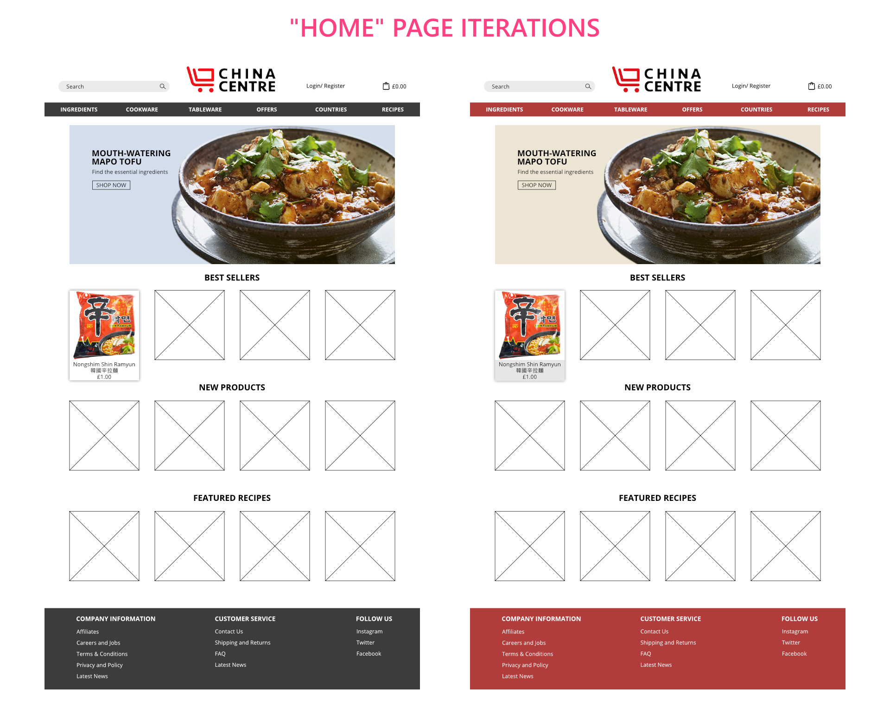Homepage prototypes 3 and 4 respectively.
Search Results Page Iterations
From the information learnt from testing the paper sketches, prototype 1 (below) was created. Compared to the sketch, the biggest change was changing the number of products on one page from twelve to nine. The second biggest change was making the “filter by price” its own section. This was done to improve readability so that the “filter by price” section can be found with greater ease.
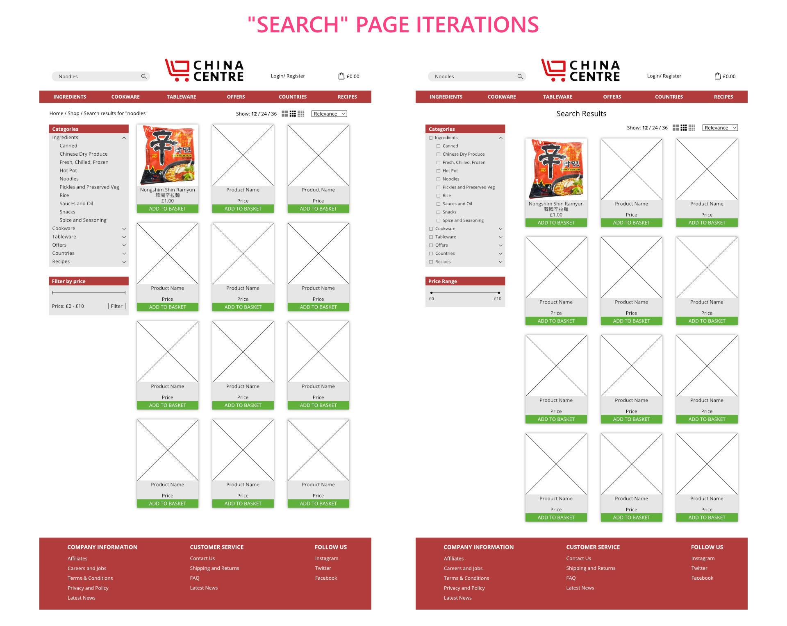Search results page prototype 1 and 2 respectively.
Prototype 1 looks complete, however, there is a main functionality flaw in the design. The category filter only allows the search to be filtered into one category. In some applications this may be enough, however in the China Centre UK store there are a wide variety of products to filter from. For example, if you wanted to browse the types of cups you can filter for tableware, this can be done by prototype 1. However, if you wanted to further filter down for both Japanese Sake cups and Chinese tea cups this would not be possible since you are limited to one filter condition. By simply adding radio buttons to the filter options we can filter for multiple categories without the need for any more unnecessary visual clutter.
Product Page Iterations
From the testing of the sketch section, I found that the top down design of the sketch left a lot of white space on the left hand side if the product description was longer. In the prototype stage I implemented a collapsible section for any additional information, reviews and shipping information. These three were deemed not as important in terms of trying to explain what the product is to the user. I also changed the “suggested items” heading to “people also viewed”, this gives a more friendly approach, as well as the user being more connected to what others have viewed.
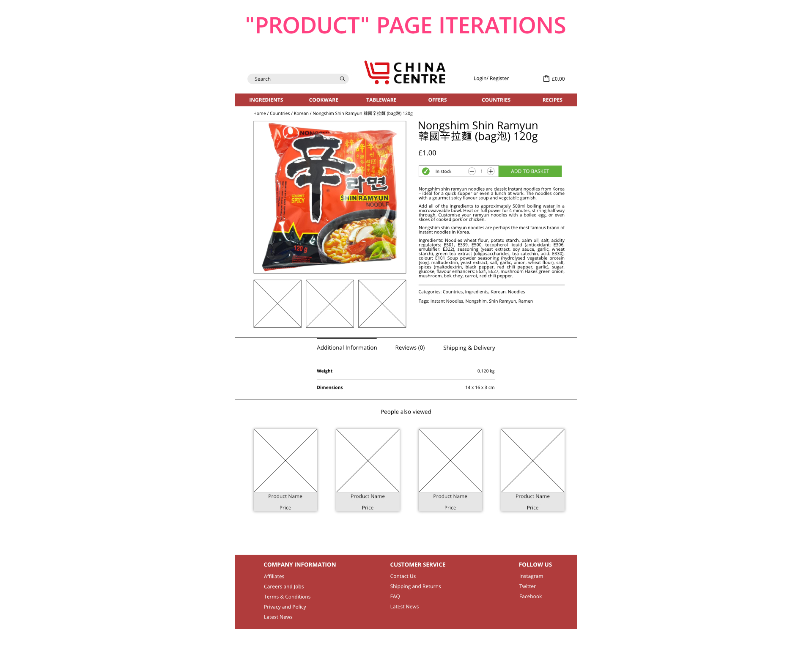Product page prototype.
Less iterations are present in this section, due to the product page currently being used sufficiently enough. The problems with the current product page is more with the content of the product rather than the design of the page.
Interactive Prototypes
The last iterations of the respective pages are the ones to be used in the interactive prototype. The interactive prototype was created by simply importing the wireframes into InVision.
NEXT STEPS
The obvious next step would be to develop and produce a high fidelity prototype and undergo further rounds of testing similar to the ones done on the interactive prototype. One thing that could be useful is to further develop the recipe page, benefitting borth the brand and the users. The recipe page could bring in more traffic towards the site, whilst increasing spending on the required ingredients for the recipes.
CONCLUSIONS
Designing on a non-industry standard piece of software could have reduced workflow, however for Affinity Designer this was not the case. Through this experience I was able to understand the software by myself, to a stage where I feel comfortable using and progressing at a decent pace. This project has shown me the importance of iterations during the development phase of any project. Competitive analysis was useful in designing good experiences for users as it showed me the value of usability patterns. These patterns can be used to help a small business thrive in such a large market space.
I will continue to use Affinity Designer and InVision in future projects. The skills learnt in these programs will give me transferable skills when designing on other industry leading pieces of software.